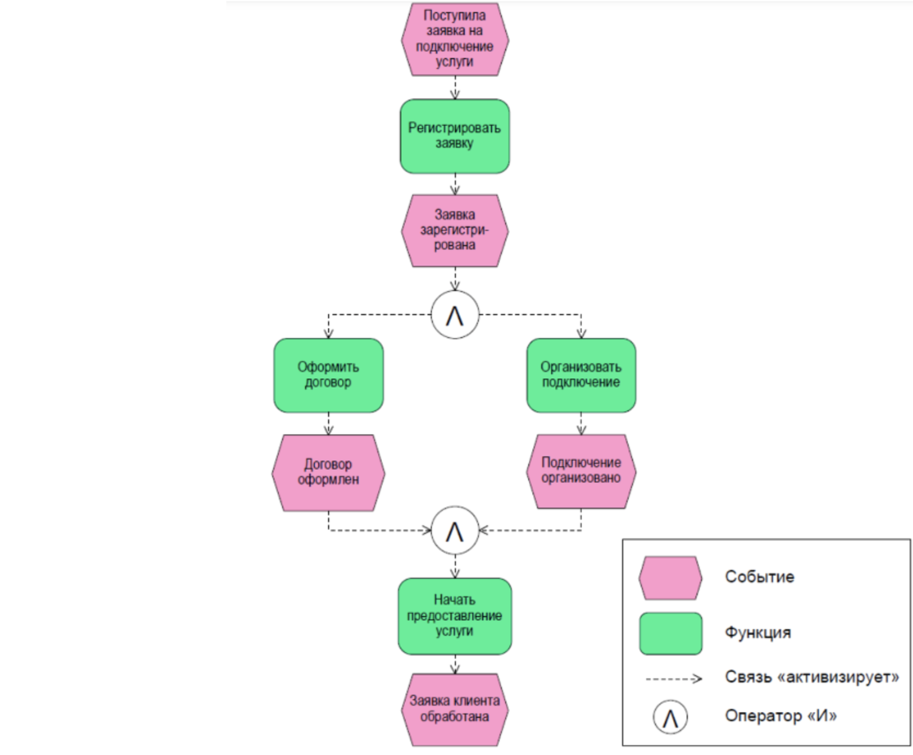

Нотация EPC
Студент ИОПС-23м
EPC (Event-driven Process Chain)
Событийная цепочка процессов. EPC предназначена для описания порядка выполнения Бизнес-процессов (БП) в виде последовательности действий, управляемых событиями и выполняемых исполнителями.
Особенности EPC:
- Нотация создавалась как нотация для работы с системой SAP R/3
- Нотация ориентирована на описание высокоуровневых БП
- Главное преимущество нотации в том, что в ней мало элементов
Операторы в нотации EPC
Пример диаграммы EPC
eEPC
extendedEPC (eEPC) - расширение нотации EPC
Объекты:
- Организационная единица (organizationalunit)
- Документ (document)
- Прикладная система (applicationsystem)
- Кластер информации (cluster)
Соглашения о правилах размещения фигур на схеме
- Последовательность событий и функций располагают сверху вниз (лучше) или слева направо (если не хватает места)
- Элементы, обозначающие исполнителей, располагаются справа от функций
- Входящие документы слева вверху от функций; направление стрелки от документов к функции
- Исходящие документы слева внизу от функций; направление стрелки от функции к документам
- Элемент «Информация» располагается внизу справа от функции
- Элемент «Приложение» располагается вверху справа от функций. Связь без стрелки
- Элементы «База данных» и «Картотека» располагаются произвольно
- Элемент «Материальный поток» располагается слева от сопровождающих его документов с привязкой к документу линией без стрелки
- Элемент «Кластер» в случае использования в сочетании с фигурой «Документ» для обозначения документа в электронном виде располагается слева от соответствующего документа
Идентификация

Пример
Исходные данные:
- Стейкхолдеры (заинтересованные в проекте лица) и бизнес-заказчики уже определены
- Процессы не описаны или описания процессов устарели, то есть необходимо описать процессы с нуля
Задачи от зазазчика
- Реализовать в ИС процесс выбора поставщика
- Описать процесс выбора поставщика в виде инструкций для пользователей
Задача реализации:
- Описать процесс в общем виде
- Поставить задачу по реализации процесса команде разработки
Кейсы:
- Автоматизация в ИС существующих в компании процессов
- Оптимизация текущих процессов или создание новых процессов, сопутствующих реализации ИС
Процесс выбора поставщика:
- Закупщик формирует требования к закупаемому оборудованию
- Закупщик организует и проводит тендер
- Закупщик выбирает лучшее предложение, представленное на тендере
- Закупщик заключает договор с выбранным поставщиком
Схема процесса выбора поставщика (BPMN)
Схема процесса выбора поставщика (EPC)
Задачи:
- Окончание тендера по таймеру
- Завершить процесс выбора поставщика, если при определении требований к оборудованию получено от руководителя получено уведомление об отмене поиска поставщика